Venues
Live music at Denver hotel wedding and event venues.
Maybe you’ve booked the hotel already, or you’re choosing between a few. Either way, you’re picturing the music there. Every hotel has its own rules on sound and its own way in for the band, and we plan the music around them.
Here’s what live music looks like at hotels and conference centers around Denver, Colorado Springs and Boulder, and the acts we’d pick for their ballrooms and terraces.
Denver hotel wedding and event venues
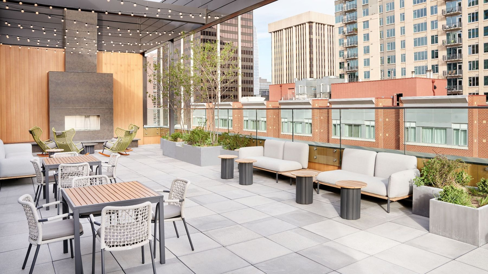
Downtown Denver
Hyatt Centric Downtown Denver
A rooftop bar and patio, a cozy lobby and the Colorado Ballroom.
Played hereTejas Singh
Live music at Hyatt Centric Downtown Denver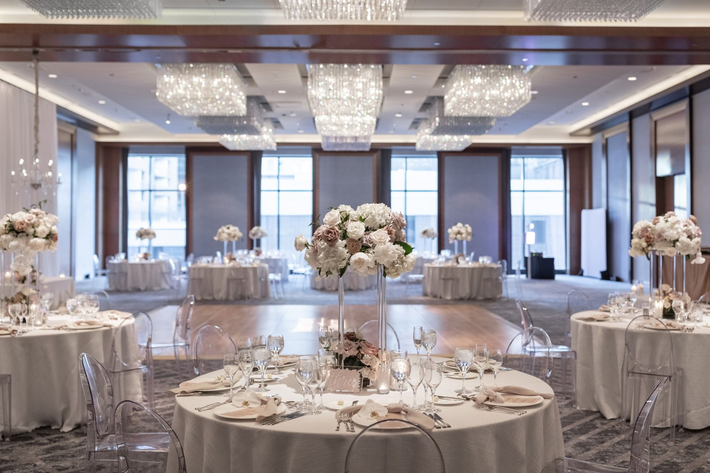
Downtown Denver
Four Seasons Hotel Denver
The Grand Ballroom, the Cottonwood Ballroom and the third-floor Pool Terrace.
Acts we'd pickLittle Moses Jones · Tejas Singh · Dirty Flamenco
Live music at Four Seasons Hotel Denver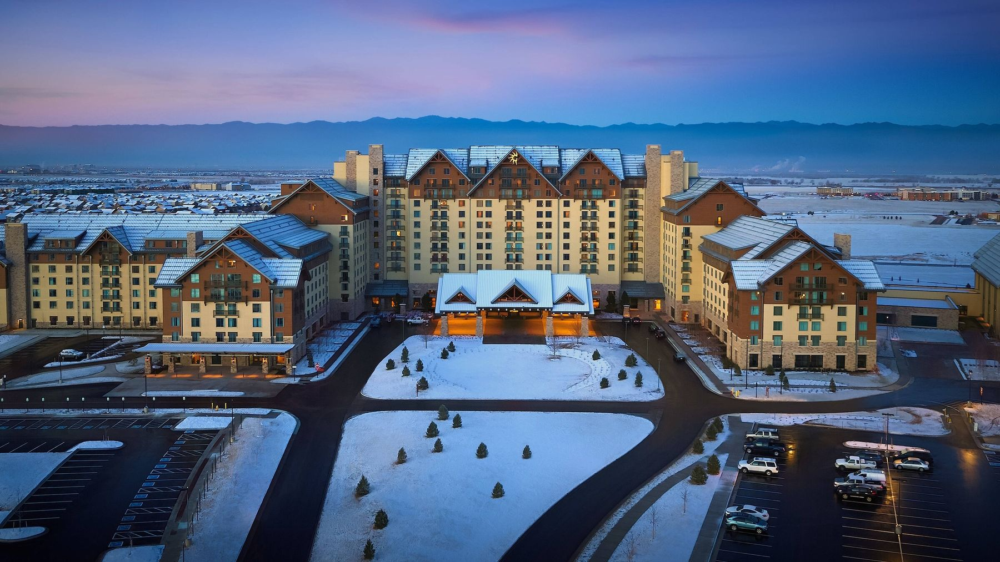
Aurora, by Denver International Airport
Gaylord Rockies Resort & Convention Center
Four ballrooms, the Mountain View Pavilion and its lawns, the Grand Lodge and the Front Range Lawn.
Acts we'd pickTejas Singh · Little Moses Jones · Quadrasonic
Live music at Gaylord Rockies
Downtown Denver
Grand Hyatt Denver
The Pinnacle Club on the 38th floor, the Colorado Ballroom and the Aspen Ballroom.
Acts we'd pickJazz Duo · Little Moses Jones · Quadrasonic
Live music at Grand Hyatt Denver
Downtown Denver
Hilton Denver City Center
The Colorado, Denver and Penrose ballrooms and an outdoor plaza.
Acts we'd pickLittle Moses Jones · Soul and R&B Band · Jazz Duo
Live music at Hilton Denver City Center
Downtown Denver, at the Colorado Convention Center
Hyatt Regency Denver at Colorado Convention Center
The Centennial Ballroom, the Capitol Ballroom, the Denver City Terrace and the Silver Room.
Acts we'd pickClassical Strings · Little Moses Jones · Soul and R&B Band
Live music at Hyatt Regency Denver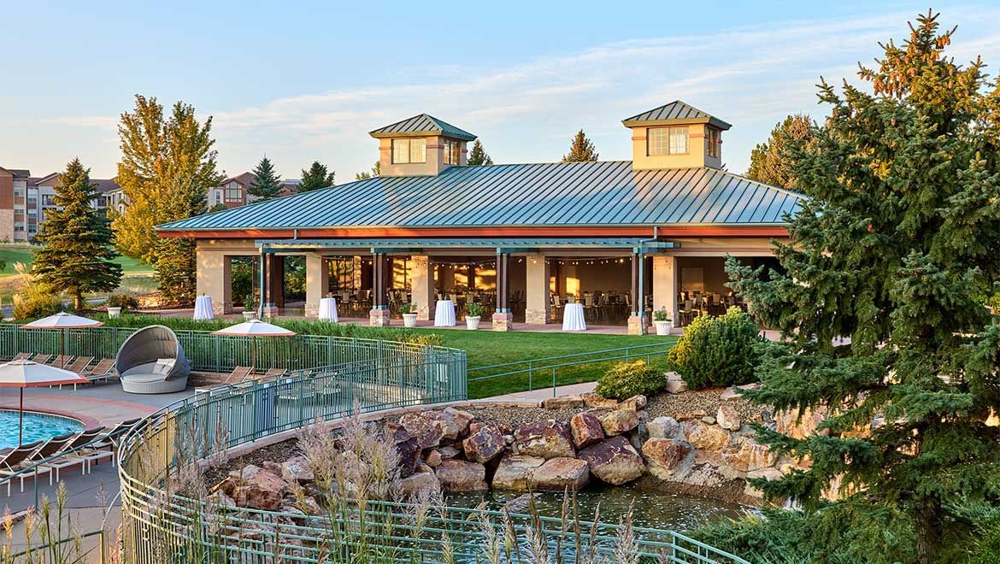
Broomfield, between Denver and Boulder
Omni Interlocken Hotel
The Interlocken and Centennial ballrooms, Ponderosa, the Outdoor Pavilion and the ceremony lawn.
Acts we'd pickClassical Strings · Dirty Flamenco · Little Moses Jones
Live music at Omni Interlocken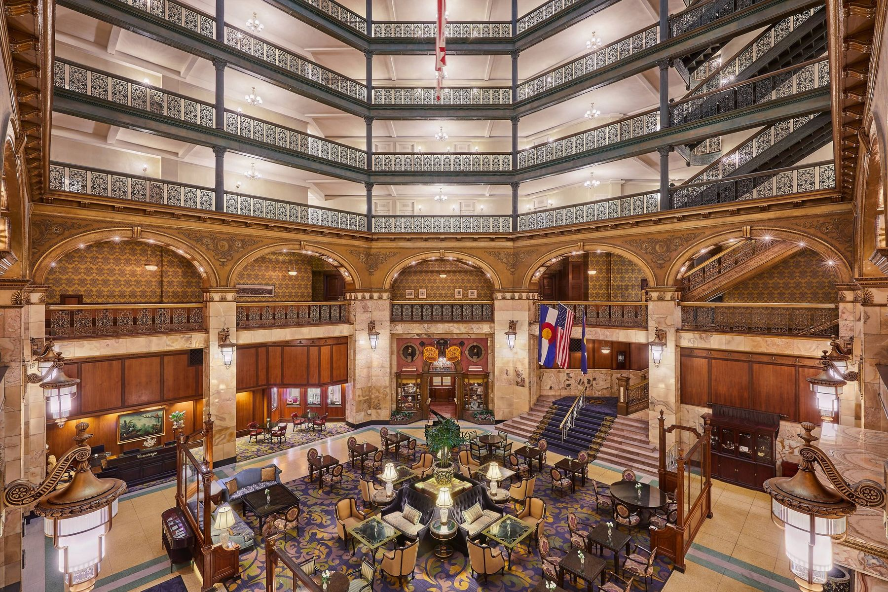
Downtown Denver
The Brown Palace Hotel and Spa
The Grand Ballroom, the Onyx Room, Central City, the Brown Palace Club and the atrium lobby.
Acts we'd pickTejas Singh · Jazz Duo · Dirty Flamenco
Live music at the Brown Palace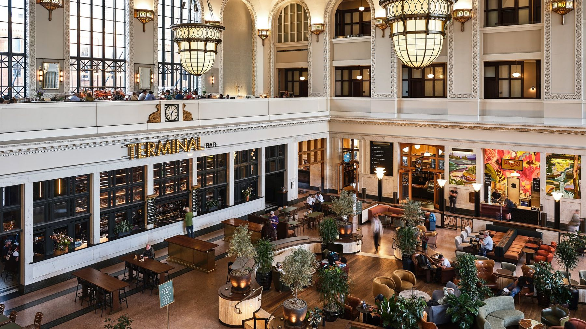
Union Station, Lower Downtown Denver
The Crawford Hotel
The Cooper Lounge, the Great Hall, the Webb Gallery and the Terminal Bar on the Plaza.
Acts we'd pickJazz Duo · Solo Guitarist · Tejas Singh
Live music at the Crawford Hotel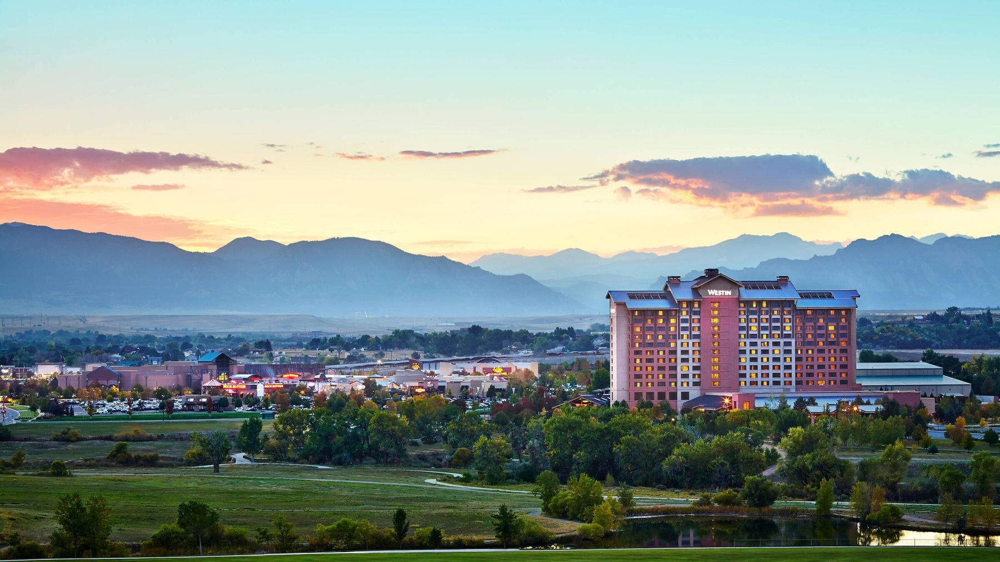
Westminster, between Denver and Boulder
The Westin Westminster
The Westminster, Legacy and Standley ballrooms, the Waterfall Gardens, the Lake House and the Sunset Rooftop Deck.
Acts we'd pickClassical Strings · Little Moses Jones · Quadrasonic
Live music at the Westin Westminster
Colorado Springs hotel wedding and event venues
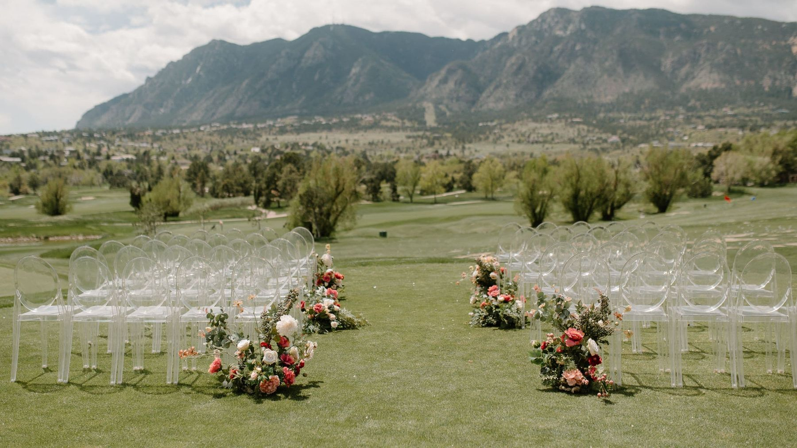
Colorado Springs
Cheyenne Mountain Resort
The Centennial, Colorado and Remingtons ballrooms and the beach on the resort’s private lake.
Acts we'd pickClassical Strings · Tejas Singh · Little Moses Jones
Live music at Cheyenne Mountain Resort
Colorado Springs, above Garden of the Gods
Garden of the Gods Resort and Club
The Three Graces Ballroom and Terrace, the View at Kissing Camels, the Garden Room, the Hill Room and the Reflection Pool.
Acts we'd pickClassical Strings · Tejas Singh · Meghan Clarisse
Live music at Garden of the Gods Resort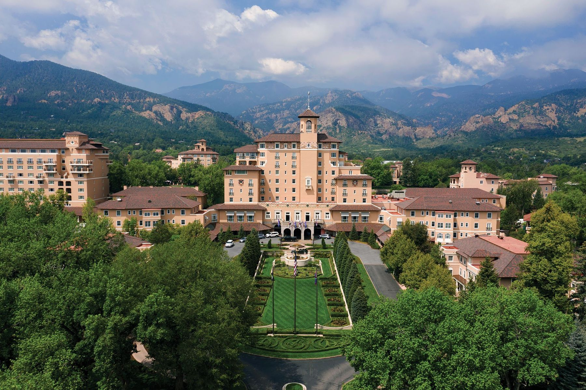
Colorado Springs, at the foot of Cheyenne Mountain
The Broadmoor
The Main Ballroom, the Lake Terrace and Lakeside Terrace, Broadmoor Hall, the International Center and Cheyenne Lodge.
Acts we'd pickClassical Strings · Jazz Duo · Dirty Flamenco
Live music at the Broadmoor
Boulder hotel wedding and event venues
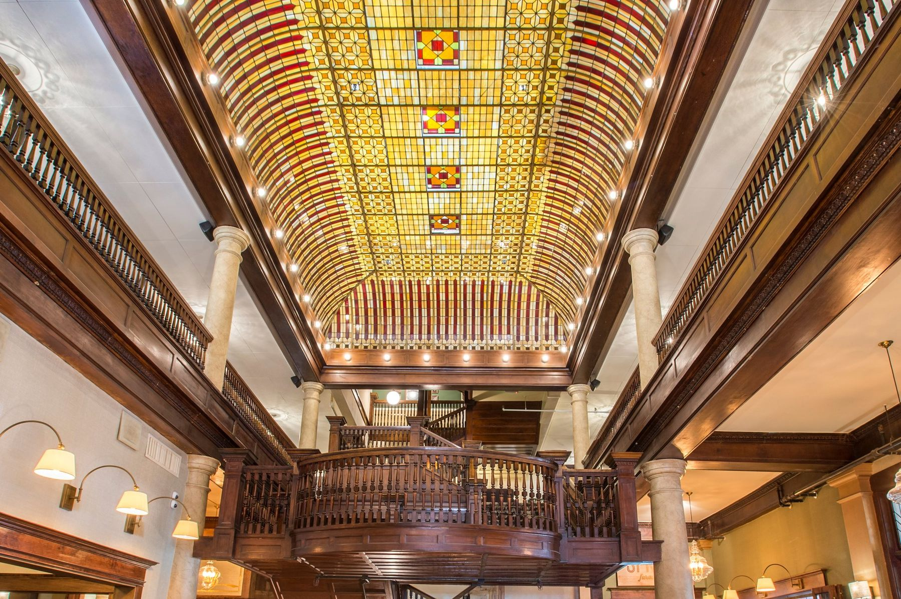
Downtown Boulder
Hotel Boulderado
The Boulderado Ballroom, the Mezzanine and the Grand Staircase, Columbine-Balsam and the Corner Bar.
Acts we'd pickClassical Strings · Tejas Singh · Jazz Duo
Live music at Hotel Boulderado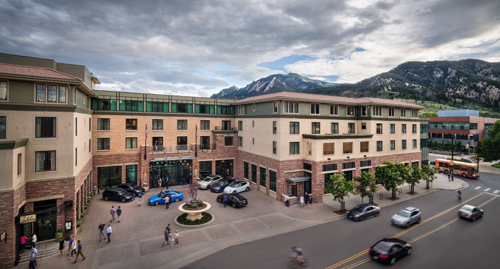
Downtown Boulder
St Julien Hotel & Spa
The Xanadu Ballroom, the lawn, the Redgarden terraces and Jill’s, with views of the Flatirons.
Acts we'd pickClassical Strings · Tejas Singh · René Moffatt
Live music at St Julien Hotel & Spa
Booking a band at a hotel
The photo at the top of this page is the Brown Palace Hotel and Spa at dusk.
Planning an event at another hotel?
We book acts at hotels and conference centers all over Denver, the Front Range and the mountain towns. Just send us your date and the hotel, and we’ll take it from there.
Want some more ideas? Take a look at live music for corporate events, weddings and private parties.